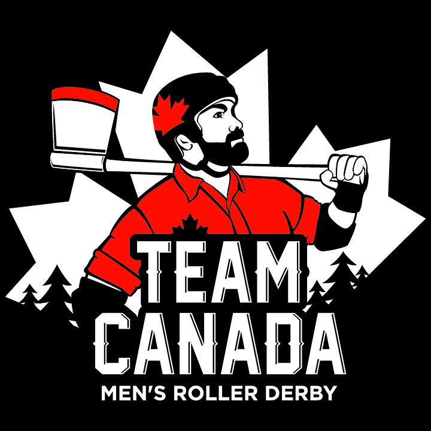
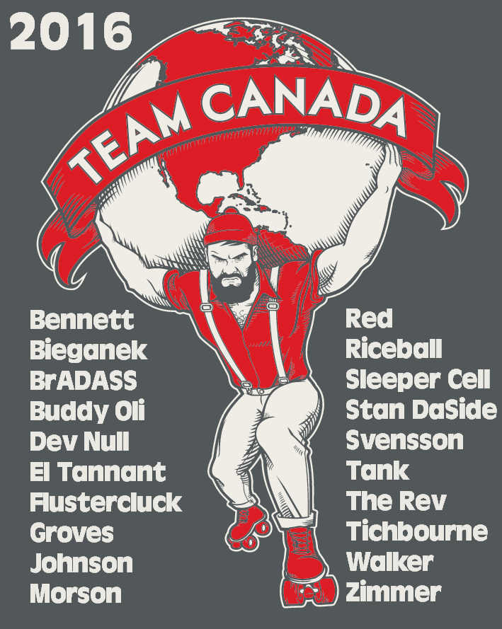

MRDWC 2016 Team Review: Team Canada
In Birmingham in 2014, Team Canada produced a strong performance, losing only once, to Team USA in the semi-final, to finish in third place. On home soil in Calgary, placed in the Green group alongside Colombia, Spain, Germany and Wales, can they go one step better this time?
Captain Jeff Tichbourne shared his thoughts on Team Canada's preparation and aims for the tournament.

Team Canada will be fielding a strong team for the World Cup. How did you go about recruitment and selection this time?
Much like in 2014 we held open tryouts in the 3 areas with the largest concentration of players across Canada. Montreal, Red Deer and Vancouver were the 3 cities we held tryouts. Our Head Coach, Lime, was at all 3 tryouts so he got to have eyes on all the people trying out. Selection of our long list was done by the coaching staff and the short list was the same but with input from the players voted as captains by the team.Last time, Team Canada played very strongly, recording some big wins and finishing in third place. Two years later, what are your aims for the tournament?
We want to be in the Gold Medal game. We have many smaller goals but they all lead to that one bigger goal, and we've got our eye on the prize.
Your group features two returning teams (Wales and Germany) and two new to the tournament (Spain and Colombia). Which nations are you most looking forward to playing? If you have time between games, who are you most looking forward to watching play?
We had a very physical game last World Cup versus Wales and we look forward to that again. The other 3 teams in our pool we haven't faced yet but we expect different styles from each of them so that's always exciting. If things work out the way we predict then the team we're most looking forward to playing is England. Between games expect to see us studying our next opponents.Last time around, you made the trip to England to compete. How does it feel to be the host nation this year? How has this affected your preparations?
We're thrilled to host so many players, officials, volunteers and fans from around the world. We really want to show them why Canada is known for its hospitality. Our preparation has been more thorough this time around and everyone is working harder than ever. We've got our nation behind us and that driving force will be with us for the whole tournament.*This year, MRDWC are promoting the lead up to the Cup with the "Road to Calgary" tag. In the spirit of this, what bouts and training have you been doing since the last selection?
Training sessions have been happening across Canada with many players racking up air miles between cities just for the chance to skate together for a few hours. We've had numerous high level WFTDA teams play our squad in preparation for the World Cup. Being such a large country and not having access to each other all the time, we've used a lot of video sharing with our coaches for feedback and tips. Our team will arrive early in Calgary to get as much skate time in as possible before the big event.
- Team Canada open the tournament by facing Germany at 9am - Calgary time - on Thursday on Track 1, followed by Colombia at 1pm on Track 2. The official MRDWC schedule is located here. More information on Team Canada can be found here.
